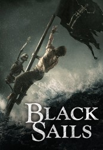

")
 
 IMDB-Wertung: 8.2 / 10
IMDB-Wertung: 8.2 / 10  Metascore:
Metascore: 
Der Freibeuter Flint jagt mit seiner Crew einem Schatz hinterher, der zusammen mit einer spanischen Galeone untergegangen sein soll. Mit dem Geld will er seinen Männern vor allem eine sichere Zukunft auf der Karibikinsel New Providence Island aufbauen, die als Zuflucht für all jene dient, die mit der britischen Krone nichts mehr zu tun haben wollen. Neben Piraten leben dort auch Prostituierte, befreite Sklaven und allerlei Glückssucher.
Jahr: 2014
Dauer: 65 Minuten
FSK: 16
Land: Süd-Afrika Studio: Starz!Tonspuren:
Untertitel: Deutsch,
Auflösung: 720p (1280x720) Größe: 128000 MB
Genre: Drama, Abenteuer, TV-Serie
Regisseur: Steve Boyum, Alik Sakharov, Lukas Ettlin, Stefan Schwartz, Neil Marshall, Sam Miller, Marc Munden, T.J. Scott, Clark Johnson, Michael Nankin, Rob Bailey, Uta Briesewitz, Marc Jobst, Roel Reiné
Drehbuch: James Ashmore Creelman
Soundtrack:
Darsteller:
 Toby Stephens als Captain Flint
Toby Stephens als Captain Flint Jessica Parker Kennedy als Max
Jessica Parker Kennedy als Max Clara Paget als Anne Bonny
Clara Paget als Anne Bonny Zach McGowan als Captain Charles Vane
Zach McGowan als Captain Charles Vane Hakeem Kae-Kazim als Mr. Scott
Hakeem Kae-Kazim als Mr. Scott Patrick Lyster als Captain Benjamin Hornigold
Patrick Lyster als Captain Benjamin Hornigold Ray Stevenson als Blackbeard
Ray Stevenson als Blackbeard Sean Cameron Michael als Richard Guthrie
Sean Cameron Michael als Richard Guthrie Anna-Louise Plowman als Mrs. Hudson
Anna-Louise Plowman als Mrs. Hudson Richard Lothian als Dobbs
Richard Lothian als Dobbs Meganne Young als Abigail Ashe
Meganne Young als Abigail Ashe Aidan Whytock als Jacob Garrett
Aidan Whytock als Jacob Garrett Adam Neill als Mr. Soames
Adam Neill als Mr. Soames Karl Thaning als O'Malley
Karl Thaning als O'Malley Robert Hobbs als Jenks
Robert Hobbs als Jenks Jason Cope als Captain Chamberlain
Jason Cope als Captain Chamberlain Nick Boraine als Peter Ashe
Nick Boraine als Peter Ashe David Wilmot als Israel Hands
David Wilmot als Israel Hands Langley Kirkwood als Captain Bryson
Langley Kirkwood als Captain Bryson Lars Arentz-Hansen als William Rhett
Lars Arentz-Hansen als William RhettDatei: X:\HD-Serien\Black Sails\S01\Black Sails S01E01.mkv seit 13.02.2017
Festplatte: HD Serien(A-H)
 Es gibt insgesamt 182 Filme in der Gruppe 'HD-Serien'
Es gibt insgesamt 182 Filme in der Gruppe 'HD-Serien'